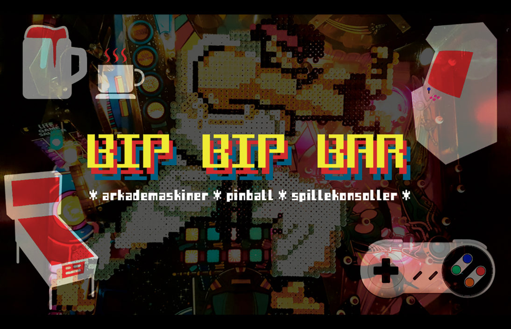

Bip Bip Bar Pop-Up
slå din high score!
Sprøde øl, sjove drinks eller gamle spillemaskiner? Bip Bip Bar Pop-Up har noget for enhver smag og priser, der holder dig spillende hele aftenen.
Nørrebros populære Bip Bip Bar er åbnet som pop-up bar på første sal i Huset. Her kan du forsøge at slå high scoren i Pac-Man eller bare drikke en kold øl og kigge de andre spillere over skulderen. Baren har et bredt udvalg af gamle arkadespil, konsoller og pinball-maskiner. Første spil er på huset.
Følg med i åbningstider og events på Bip Bip Bar Pop-Ups Facebook.
Bip Bip Bar Pop-Up åbningstider
Fredag-lørdag: 16.00-02.00
Læs mere på Bip Bip Bars hjemmeside.